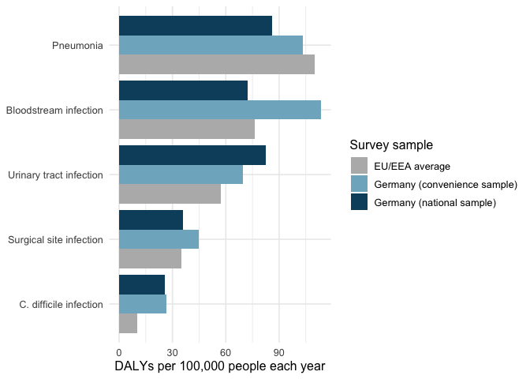

haiburden helps you compare five infections that patients catch in hospital. It is for hospital infection control managers. They decide which infections get prevention money first. The package answers one question. Is the most common hospital infection also the infection that does the most harm? You can rank the infections by number of cases, deaths or healthy years lost. The ranking changes with the measure.
Website
The package website is at https://etc5523-2026.github.io/etc5523-assignment-4-cfan0055/.
Installation
You can install haiburden from GitHub with this code.
# install.packages("remotes")
remotes::install_github("ETC5523-2026/etc5523-assignment-4-cfan0055")Example
This example ranks the infections by healthy years lost.
library(haiburden)
plot_burden(hai_burden, burden_measure = "DALYs")
Bloodstream infection is near the top of this chart. It is one of the least common infections, so each case does a lot of harm.
Data
The dataset hai_burden holds published estimates for Germany and the EU/EEA from hospital surveys in 2011 and 2012. The numbers come from Table 2 of Zacher et al. (2019) in Eurosurveillance. The code that builds the dataset is in the data-raw folder.
What is in the package
| Object | What it does |
|---|---|
hai_burden |
Dataset of cases, deaths and healthy years lost for five infections |
plot_burden() |
Draws a bar chart for one measure |
harm_per_infection() |
Calculates healthy years lost for every 100 infections |
run_app() |
Opens the Shiny app |
AI-use declaration
I used generative AI tools while preparing this assignment. Claude (Anthropic) explained the overall steps for building an R package with a Shiny app and a pkgdown website. It answered my questions about the structure of the package and the app. It pointed out steps I had missed and helped me fix bugs in my code. It also gave example code and example text. I reviewed, ran and tested this material, and I changed parts of it before using it. I checked the final package and app myself, and I am responsible for this submission.